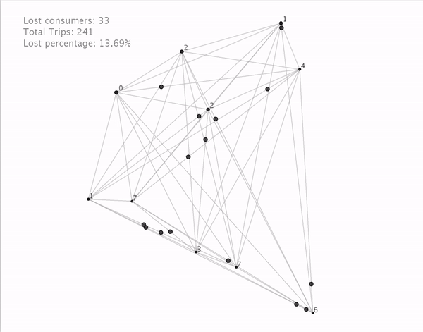

Optimization Mobile on Demand Systems
Shared-Vehicle Mobility-On-Demand Systems: Modeling and Optimization of Rebalancing Empty Vehicles over Hub-based Network
Abstract. In this project, we consider the operation of automated mobility-on-demand systems. where the mobility service of self-driving automated vehicles are shared by customers across different time. In this systems, redirecting after-service fleet to periodically match the upcoming demand plays an important role to guarantee service level as well as fleet utilization. Specifically, we approach this problem with a hub-based network model, where demand and traffic flow are generated with some pre-known demographic information. We track the fleet level at each hubs across different time period and come up with optimal rebalancing solution to redirect empty fleets using some key performance metrics, such as aggregated rebalancing travel time. Via simulation, we provide performance evaluation by comparing different rebalancing policies with different fleet size. We found that rebalancing benefits the system most when certain information of the future demand could be predicted.
Introduction
In recent years, it is not hard to see the increasingly urbanized world gradually complicating people’s sustainable access to mobility service. The increase of the ownership of vehicle, due to higher demand of transportation, gives greater pressure to our road networks and other supporting infrastructure. Although expand parking spend and transportation network system might temporarily resolve the issue, problems related to cost and limited spatial resources make it not desirable to do so. It is also been pointed out that traffic demand may also increase along with larger traffic system and resolving inefficient utilization of the vehicles can powerful reduce congestion in a sustainable way.
Thanks to the blooming of shared-economy market and advancements in mobility technology, it becomes possible to increase the utilization of vehicle through sharing the accessibility across different time. Considering the cost of car ownership and future maintenance, it is more attractive to use the on-demand mobility service rather than rely on self-owned vehicles, which are also often under-utilized. For example, consider the following mobility-on-demand (MoD) system. Passengers or users can access mobility by sharing a fleet with other across different time period. Using their cell phone, a user can reserve and pick up a nearby vehicle, drive to the destination and return the vehicle back to the system. The pickup and drop off location are not necessary the same. In compare with public transit, MoD system is more flexible to accommodate different trip types and also gives more freedom.
From the perspective of on-demand mobility service provider, ensuring passenger to have reliable access to mobility service become really important for the business. It raises the attention to consider how dynamic operation would benefit both the business and the passenger. The short time window, between demand showing up and leaving away, is one of the main challenges to most mobility service provider. Instead of investing on a larger fleet size to lowering the possibility of losing demand, cleverly operating the system based on certain known information might be the key to resolve the challenge. The more sharing it can be achieved for over a single vehicle across time, the larger reduction on congestion and better business performance it could possible achieve. Moreover, sharing the vehicle could also reducing energy consumption and carbon emission by reducing the total number of vehicles in system.
Illustrations
We created a simulation to observe the results graphically.

In the animation, the fixed points are the hubs, it’s radius indicates the number of avaiable vehicle in each hub. Every hub are connected to each other. The black circles represent vehicles that are carrying consumer from one hub to the other. The circles in blue represent the vehicles that are being rebalanced to other hubs. When the remaining vehicles in a hub reaches a critical points, rebalancing happens.